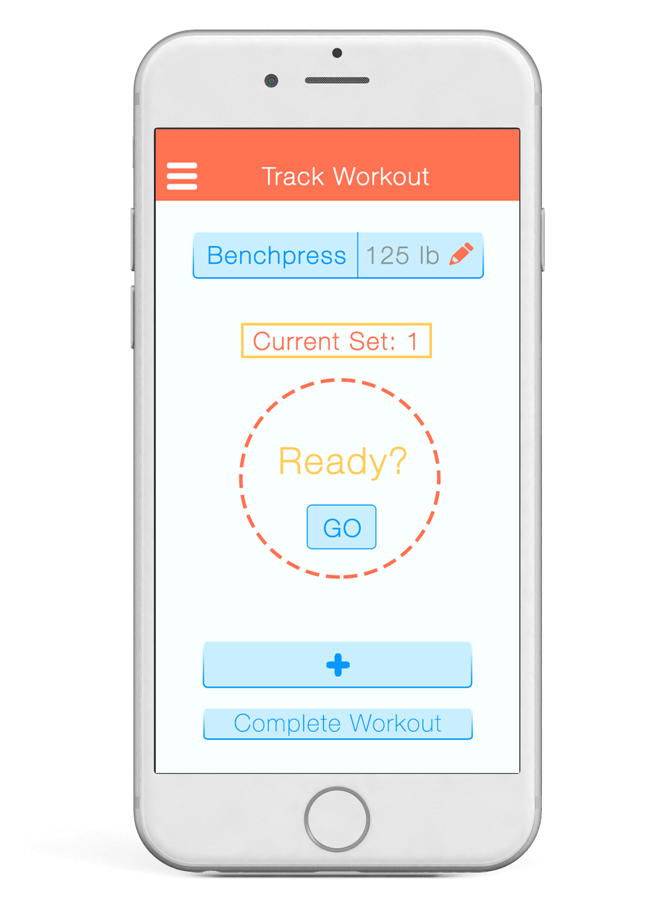

My Role
Design Lead + Project Manager
Project Type
Mobile App
3 months | March 2015 - May 2015
Teammates
Bhavya Chilakapati, Won Chung, Nat Eliason, Aubrey Higginson
The goal of Reps was to make tracking weightlifing exercises as smooth and hands-free of a task as possible in order to help users focus on the workout.
This project was advised by Chris Harrison for Designing Human-Centered Software.
Reps is currently live on the Google Play store.
Challenge
How Can We Help Weightlifters Track Their Workouts?
Runners have enjoyed the fluid fitness experience of apps that passively track pace, distance, and overall running times.
Why doesn't that fluidity of tracking exist for weightlifting?
Reps Helps You Focus On Lifting
Reps automatically tracks exercises as they are performed using the phone's accelerometer. With a tap on the phone held in a pocket or armband, the user is automatically starts a rest counter. As soon as it is time for the next set, Reps lets the user know.
How It Works
Our team created a walkthrough, demonstrating the functions of Reps.
Input Exercise
Reps prompts the user to add exercise details before beginning the set: exercise type, weight, and rest time.
Using the Accelerometer
The accelerometer allows for reps to be counted...hands-free!
The user just has to put their phone in their pocket or strap it to their arm or leg with an armband and hit GO.

Counter + Rest
While Reps counts reps and rest time, the only user interaction required is to mark the end and start of each set.
Design + Research Process
Manually Inputting Data Is a Hassle
Through surveying, user interviews, and market research, our team discovered that many weightlifters do not use any technology during their workout. Many had installed an app, and then uninstalled it shortly because there were too many frills. Most fitness applications are related to diet or running.
__________
Use Cases
After conducting needs finding via market research, eight user interviews, and a survey that received over 250 responses, our team learned that there was a need for a weightlifting application that did not require constant manual input.
We came up with three use cases.
Track sets and reps efficiently and reliably.
Rest for the appropriate amount of time between sets.
View history of past workouts for progress towards fitness goals.
__________
Design + Feedback
Our team went through rounds of paper prototyping, mid-fi prototyping in Keynote, and hi-fi prototyping in Photoshop and Invision with user testing in between before moving into development.


__________
Development
Using the Pythagorean Theorem, Reps calculates net acceleration from the x, y, and z axes data points obtained from the phone accelerometer. When acceleration exceeds 2m/s^2, Reps increments the count of a rep.
For the frontend, XML files use and combine design assets that are saved as PNG files.
Future Work
Representing Progress
If time permitted, I would want to focus on better visualization of progress. The current view is a list, as we had trouble thinking of how to visualize progress. When there are more than two variables to consider, it doesn't make sense to use a graph. We would need to brainstorm more on this.